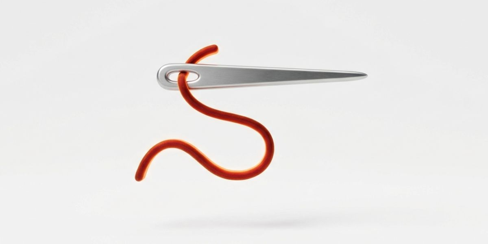
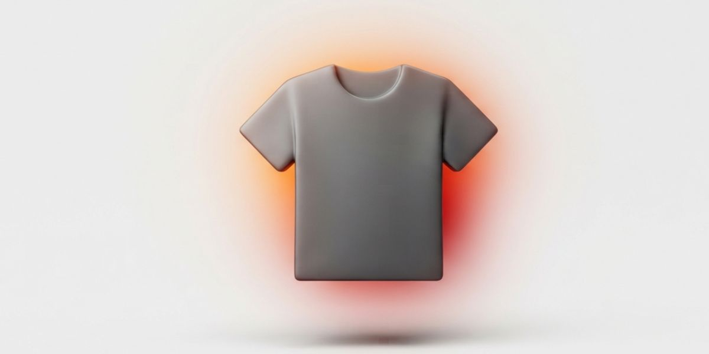

BUSINESS 02
ブランド事業「GUTS1.0」
動物モチーフの可愛らしさと、荒々しいグラフィックの狭間に立つ自社ブランド。受注生産で、必要な人へ必要な分だけ届けています。

ブランドコンセプト
「可愛さと、確かな強さ。」GUTS1.0は、動物モチーフの愛らしさと、丁寧な作り込みを等身大で表現するアパレルブランドです。
特長

受注生産在庫を持たず、注文が入ってから一点ずつ製作。必要な分だけを届けます。

アパレル企画Tシャツ、パーカー、アクセサリーなど、動物モチーフとグラフィックを融合したアイテム。
ブランディング
ロゴ、世界観、コミュニケーションまで一貫したブランド設計。